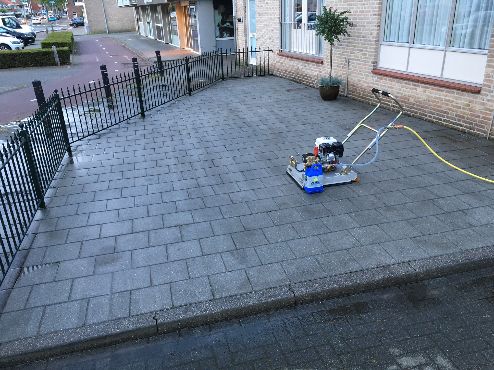
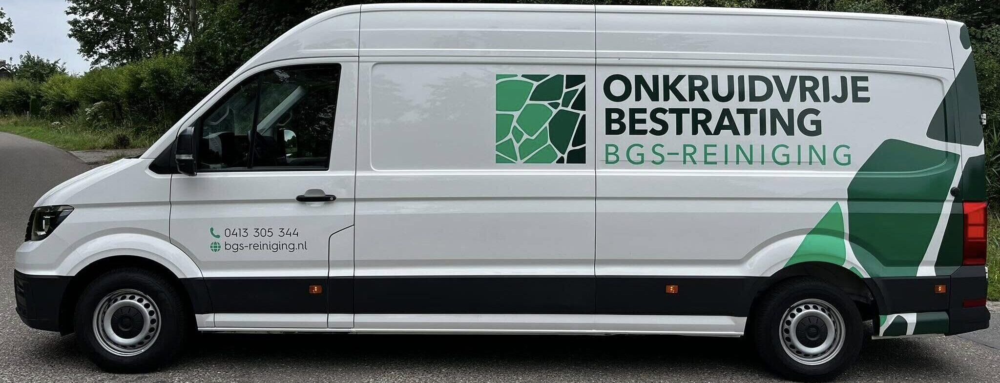
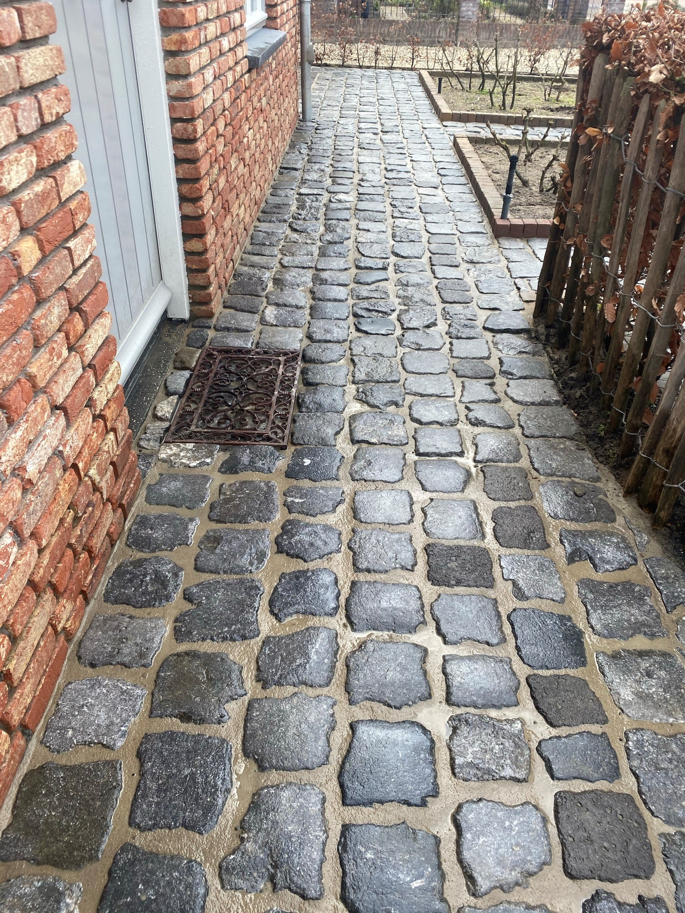
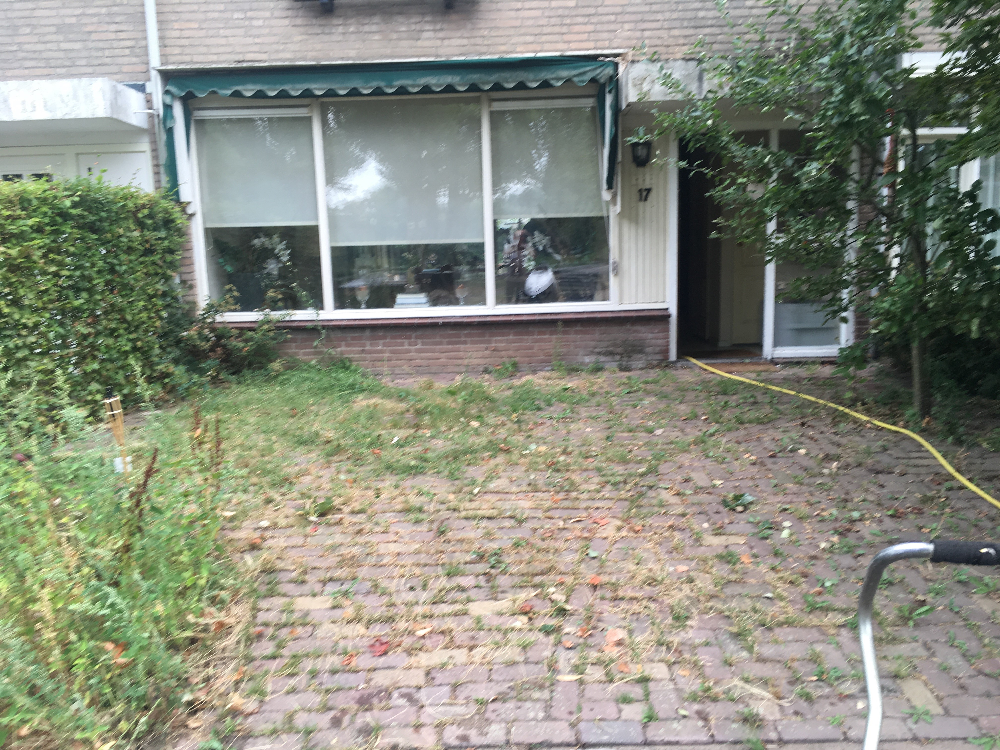
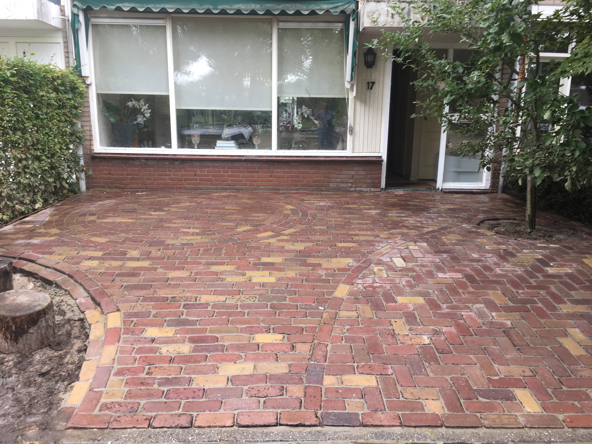
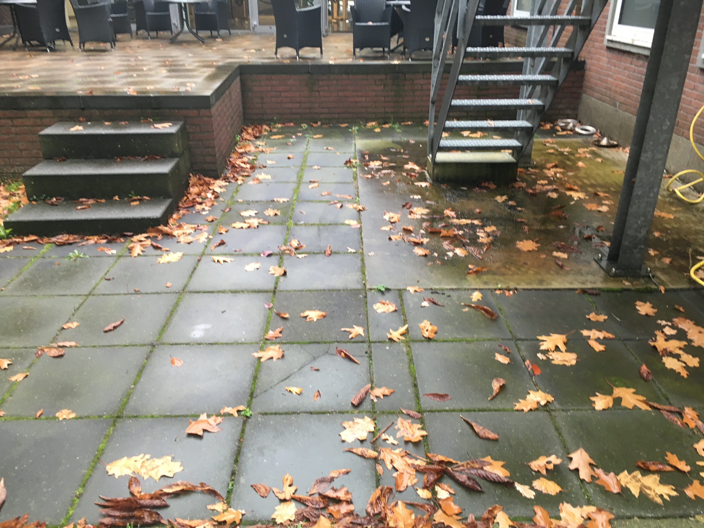
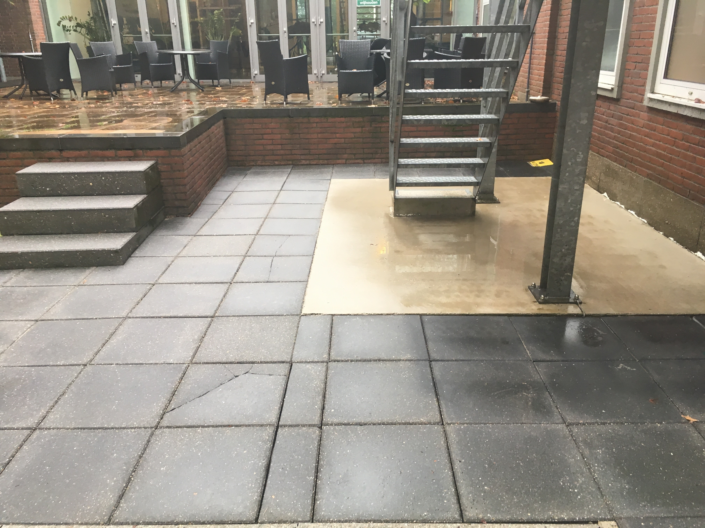

Bestrating reinigen
Een schoon terras, oprit of stoep? Wij reinigen machinaal, professioneel, snel en zonder milieubelastende schoonmaakmiddelen. Bestrating weer als nieuw.
Meer informatie
BGS-Reiniging is gespecialiseerd in het professioneel reinigen en blijvend onkruidvrij invoegen van nieuwe en bestaande bestrating. Voor particulier, hovenier, bedrijf, VVE, overheid en horeca.
Wij reinigen alle soorten bestrating machinaal en voegen deze onkruidvrij in met professionele voegmortel.

Een schoon terras, oprit of stoep? Wij reinigen machinaal, professioneel, snel en zonder milieubelastende schoonmaakmiddelen. Bestrating weer als nieuw.
Meer informatie
Onze speciale voegmortel voorkomt onkruid tussen tegels en stenen. Geen onkruid meer op het terras of de oprit — een eenmalige investering.
Meer informatie
Bescherm de bestrating door deze opnieuw te laten impregneren: water- en vuilafstotend, minder snel groene aanslag en eenvoudiger onderhoud.
Meer informatieSleep de schuif om het verschil te zien. Van groen en vervuild naar strak, schoon en onkruidvrij.


Voor Na

Voor Na
BGS-Reiniging is sinds 2017 gespecialiseerd in het reinigen en blijvend onkruidvrij invoegen van bestrating. Door jarenlange ervaring weten wij waar we over praten en kiezen we samen met u de beste oplossing voor uw situatie.
Richard van BreugelEigenaar BGS-Reiniging
Een greep uit de beoordelingen die klanten achterlieten.
"Zeer tevreden over de uitgevoerde werkzaamheden op ons parkeerterrein. Heldere afspraken, vriendelijke mensen en het ziet er weer tip top uit!"
"Wij zijn ontzettend blij met onze stoepen die ingevoegd zijn door BGS reiniging! Het ziet er prachtig uit. Zeer accurate eigenaar en personeel!"
"Deze heren van BGS zijn echte vakmannen. Er wordt goed uitgelegd wat er gaat gebeuren en ze gaan vlot doch secuur te werk. Blij met het onkruidvrij maken van onze oprit en achtertuin."
In deze regio berekenen wij geen toeslag of voorrijkosten. Daarbuiten zijn de condities uiteraard vooraf bespreekbaar.
Vul het offerteformulier in of bel direct met Richard. We komen graag vrijblijvend op locatie kijken, zodat u vooraf precies weet waar u aan toe bent.